Variational Gradient Matching for Dynamical Systems: Lorenz Attractor
Contents
- .
- Authors:
- Contents:
- User Input: Simulation Settings
- User Input: Estimation Settings
- Preprocessing
- Mass Action Dynamical Systems
- Simulate Trajectories
- Prior on States and State Derivatives
- Matching Gradients
- Rewrite ODEs as Linear Combination in Parameters
- Posterior over ODE Parameters
- Rewrite ODEs as Linear Combination in Individual States
- Posterior over Individual States
- Mean-field Variational Inference
- Fitting observations of state trajectories
- Coordinate Ascent Variational Gradient Matching
- Time Taken
- References
.
Authors:
Nico Stephan Gorbach and Stefan Bauer, email: nico.gorbach@gmail.com
Contents:
Instructional code for the NIPS (2018) paper Scalable Variational Inference for Dynamical Systems by Nico S. Gorbach, Stefan Bauer and Joachim M. Buhmann. Please cite our paper if you use our program for a further publication. The derivations in this document are also given in the doctoral thesis https://www.research-collection.ethz.ch/handle/20.500.11850/261734 as well as in parts of Wenk et al. (2018).
Example dynamical system used in this code:* Lorenz attractor* system with the* y-dimension unobserved*. The ODE parameters are also unobserved.
User Input: Simulation Settings
- true ODE parameter
Input a row vector of real numbers of size 1 x 3:
simulation.ode_param = [10,28,8/3];
- final time for simulation
Input a positive real number:
simulation.final_time = 20;
- observation noise
Input a function handle:
simulation.state_obs_variance = @(mean)(bsxfun(@times,[2,2],ones(size(mean))));
- time interval between observations
Input a positive real number:
simulation.interval_between_observations = 0.1;
User Input: Estimation Settings
- *Kernel parameters *$\mathbf\phi$
Input a row vector of positive real numbers of size 1 x 2:
kernel.param = [10,0.2];
- Error variance on state derivatives (i.e. 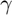*)*
Input a row vector of positive real numbers of size 1 x 3:
state.derivative_variance = [6,6,6];
- Estimation times
Input a row vector of positive real numbers in ascending order:
time.est = 0:0.1:20;
Preliminary operations
close all; clc; addpath('VGM_functions')
Preprocessing
[symbols,simulation,ode,odes_path,coupling_idx,opt_settings,plot_settings] = preprocessing_Lorenz_Attractor (simulation);
ODEs: / d x \ | --- == -sigma (x - y) | | dt | | | | d y | | --- == rho x - y - x z | | dt | | | | d z | | --- == x y - lambda z | \ dt /
Mass Action Dynamical Systems
A deterministic dynamical system is represented by a set of 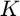 ordinary differential equations (ODEs) with model parameters 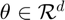 that describe the evolution of states 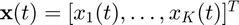 such that:
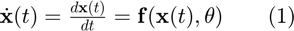,
A sequence of observations, 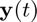, is usually contaminated by measurement error which we assume to be normally distributed with zero mean and variance for each of the states, i.e. 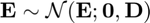, with 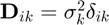. For 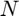 distinct time points the overall system may therefore be summarized as
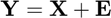,
where
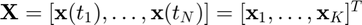,
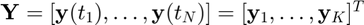,
and 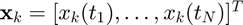 is the 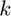'th state sequence and 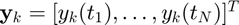 are the observations. Given the observations 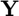 and the description of the dynamical system (1), the aim is to estimate both state variables 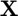 and parameters 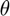.
We consider only dynamical systems that are _*locally linear _*with respect to ODE parameters and individual states 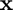. Such ODEs include mass-action kinetics and are given by:
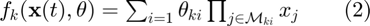,
with $\mathcal{M}_{ki} \subseteq \{ 1, \dots, K\}$describing the state variables in each factor of the equation (i.e. the functions are linear in parameters and contain arbitrary large products of monomials of the states).
Simulate Trajectories
[simulation,obs_to_state_relation,fig_handle,plot_handle] = simulate_state_dynamics(simulation,state,symbols,ode,odes_path,time,plot_settings);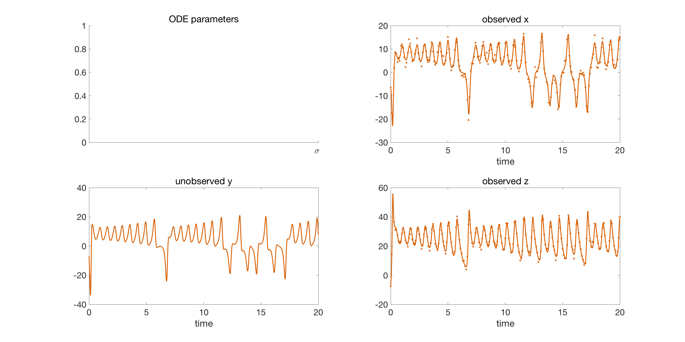
start timer
tic;
Prior on States and State Derivatives
Gradient matching with Gaussian processes assumes a joint Gaussian process prior on states and their derivatives:
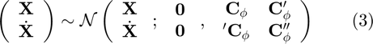,
with
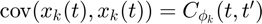,
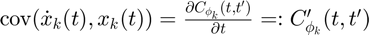,
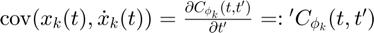,
$\mathrm{cov}(\dot{x}_k(t), \dot{x}_k(t)) = \frac{\partialC_{\mathbf\phi_k}(t,t') }{\partial t \partial t'} =: C_{\mathbf\phi_k}''(t,t')$.
Error updating Text.
Character vector must have valid interpreter syntax:
$\mathrm{cov}(\dot{x}_k(t), \dot{x}_k(t)) = \frac{\partialC_{\mathbf\phi_k}(t,t') }{\partial t \partial t'} =: C_{\mathbf\phi_k}''(t,t')$
Matching Gradients
Given the joint distribution over states and their derivatives (3) as well as the ODEs (2), we therefore have two expressions for the state derivatives:
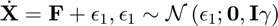,
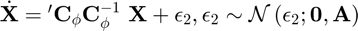,
where 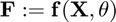 and 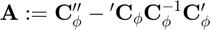 and is the error variance in the ODEs. Note that, in a deterministic system, the output of the ODEs 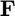 should equal the state derivatives 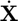. However, in the first equation above we relax this contraint by adding stochasticity to the state derivatives in order to compensate for a
potential model mismatch. The second equation above is obtained by deriving the conditional distribution for from the joint distribution in equation (3). Equating the two expressions in the equations above we can eliminate the unknown state derivatives $\dot{\mathbf{X}$:
Error updating Text.
Character vector must have valid interpreter syntax:
$\dot{\mathbf{X}$
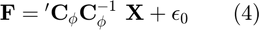,
with 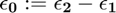.
[dC_times_invC,inv_C,A_plus_gamma_inv] = kernel_function(kernel,state,time.est);
Rewrite ODEs as Linear Combination in Parameters
Since, according to the mass action dynamics (equation 2), the ODEs are *linear in the parameters *$\mathbf\theta$ we can rewrite the ODEs in equation (2) as a linear combination in the parameters:
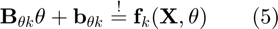,
where matrices 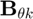 and  and 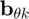 are defined such that the ODEs 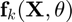 are expressed as a linear combination in .
and 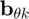 are defined such that the ODEs 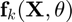 are expressed as a linear combination in .
[ode_param.lin_comb.B,ode_param.lin_comb.b] = rewrite_odes_as_linear_combination_in_parameters(ode,symbols);
Posterior over ODE Parameters
Inserting (5) into (4) and solving for $ yields:
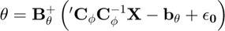,
where  denotes the pseudo-inverse of 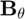. Since 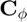$ is block diagonal we can rewrite the expression above as:
denotes the pseudo-inverse of 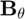. Since 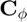$ is block diagonal we can rewrite the expression above as:
![$\mathbf{\theta} = \left( \mathbf{B}_{\mathbf{\theta}}^T \mathbf{B}_{\mathbf{\theta}} \right)^{-1} ~\mathbf{B}_{\mathbf{\theta}}^T \left( \sum_k {'\mathbf{C}_{\mathbf{\phi}_k}}\mathbf{C}_{\mathbf{\phi}_k}^{-1} \mathbf{X}_k - \mathbf{b}_{\mathbf{\theta} k} + \mathbf{\epsilon_0}^{(k)} \right)\\ ~= \left( \mathbf{B}_{\mathbf{\theta}}^T \mathbf{B}_{\mathbf{\theta}} \right)^{-1} \left(\sum_k \mathbf{B}_{\mathbf{\theta} k}^T \left( {'\mathbf{C}_{\mathbf{\phi}_k}}\mathbf{C}_{\mathbf{\phi}_k}^{-1} \mathbf{X}_k - \mathbf{b}_{\mathbf{\theta} k} +\mathbf{\epsilon_0}^{(k)} \right) \right)$](VGM_for_Lorenz_Attractor_eq07476366998092137637.png) ,
,
where we subsitute the Moore-Penrose inverse for the pseudo-inverse (i.e. 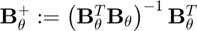). We can therefore derive the posterior distribution over ODE parameters:
 .
.
Rewrite ODEs as Linear Combination in Individual States
Since, according to the mass action dynamics (equation 2), the ODEs are *linear in the individual state* 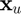 we can rewrite the ODE as a linear combination in the individual state :
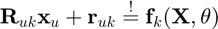,
where matrices $ \mathbf{R}_{uk}$ and 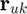 are defined such that the ODE is expressed as a linear combination in the individual state .
[state.lin_comb.R,state.lin_comb.r] = rewrite_odes_as_linear_combination_in_ind_states(ode,symbols,coupling_idx.states);
Posterior over Individual States
Given the linear combination of the ODEs w.r.t. an individual state, we define the matrices 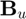 and 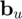 such that the expression 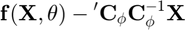$ is rewritten as a linear combination in an individual state :
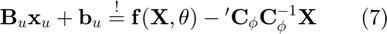.
Inserting (7) into (4) and solving for $ yields:
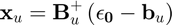$,
where 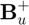$ denotes the pseudo-inverse of $. Since $ is block diagonal we can rewrite the expression above as:
,
where we subsitute the Moore-Penrose inverse for the pseudo-inverse (i.e. ). We can therefore derive the posterior distribution over an individual state $:
,
with $ denoting the set of all states except state $.
Mean-field Variational Inference
To infer the parameters $, we want to find the maximum a posteriori estimate (MAP):
 .
.
However, the integral above is intractable due to the strong couplings induced by the nonlinear ODEs  $ which appear in the term $.
$ which appear in the term $.
We use mean-field variational inference to establish variational lower bounds that are analytically tractable by decoupling state variables from the ODE parameters as well as decoupling the state variables from each other. Note that, since the ODEs described by equation (2) are *locally linear*, both conditional distributions $ (equation (6)) and $ (equation (8)) are analytically tractable and Gaussian distributed as mentioned previously. The decoupling is induced by designing a variational distribution $ which is restricted to the family of factorial distributions:
$.
The particular form of $ and $ are designed to be Gaussian distributed which places them in the same family as the true full conditional distributions. To find the optimal factorial distribution we minimize the Kullback-Leibler divergence between the variational and the true posterior distribution:
$,
where $ is the proxy distribution. The proxy distribution that minimizes the KL-divergence (10) depends on the true full conditionals and is given by:
.
Fitting observations of state trajectories
We fit the observations of state trajectories by standard GP regression. The data-informed distribution$ $ in euqation (9) can be determined analytically using Gaussian process regression with the GP prior $:
$,
where  $ and $.
$ and $.
[mu,inv_sigma] = fitting_state_observations(inv_C,obs_to_state_relation,simulation,symbols);
Coordinate Ascent Variational Gradient Matching
We minimize the KL-divergence in equation (10) by coordinate descent (where each step is analytically tractable) by iterating between determining the proxy for the distribution over ODE parameters $ and the proxies for the distribution over individual states $.
- Initialize the state estimation by the GP regression posterior
state.proxy.mean = array2table([time.est',mu],'VariableNames',['time',symbols.state_string]);
- Coordinate ascent
z=1;
for i = 1:opt_settings.coord_ascent_numb_iter
- Proxy for ODE parameters
Expanding the proxy distribution in equation (11) for
$$\mathbf{\theta}$$ yields: $\hat{q}(\mathbf{\mathbf\theta}) \propto \exp
\left( ~E_{Q_{-\mathbf\theta}} \ln p(\mathbf\theta \mid \mathbf{X},\mathbf{Y},\mathbf\phi,\gamma,\mathbf\sigma)
~ \right) \\ \qquad= \exp \left( ~E_{Q_{-\mathbf{\theta}}} \ln \mathcal{N}\left(\mathbf{\theta}
; \left( \mathbf{B}_{\mathbf{\theta}}^T \mathbf{B}_{\mathbf{\theta}} \right)^{-1}
\left( \sum_k \mathbf{B}_{\mathbf{\theta} k}^T ~ \left( {'\mathbf{C}_{\mathbf{\phi}
k}} \mathbf{C}_{\mathbf{\phi} k}^{-1} \mathbf{X}_k - \mathbf{b}_{\mathbf{\theta}
k} \right) \right), ~ \mathbf{B}_{\mathbf{\theta}}^+ ~ (\mathbf{A} + \mathbf{I}\gamma)
~ \mathbf{B}_{\mathbf{\theta}}^{+T} \right) ~\right)$, where we substitute $$p(\mathbf{\theta} \mid \mathbf{X},\mathbf{\phi},\gamma)$$
with its density given in equation (6). [param_proxy_mean,param_proxy_inv_cov] = proxy_for_ode_parameters(state.proxy.mean{:,symbols.state_string},...
dC_times_invC,ode_param.lin_comb,symbols,A_plus_gamma_inv,opt_settings);
Intermediate results
if i==1 || ~mod(i,1) plot_results(fig_handle,state.proxy,simulation,param_proxy_mean,plot_handle,symbols,plot_settings,'not_final'); end z = z+1; print(1,['video/demo_' num2str(z) '.png'],'-dpng','-r0');


- Proxy for individual states
Expanding the proxy distribution in equation (12) over
the individual state $$\mathbf{x}_u$$: $\hat{q}(\mathbf{x}_u) \stackrel{(a)}{\propto} \exp \left(
~ E_{Q_{-u}} \ln ( p(\mathbf{x}_u \mid \mathbf\theta, \mathbf{X}_{-u},\mathbf\phi,\gamma)
p(\mathbf{x}_u \mid\mathbf{Y},\mathbf\phi,\mathbf\sigma) ) ~ \right)\\ \qquad
~ \stackrel{(b)}{=} \exp\big( ~ E_{Q_{-u}} \ln \mathcal{N}\left(\mathbf{x}_u
; -\mathbf{B}_{u}^+ \mathbf{b}_u, ~\mathbf{B}_u^{+} ~ (\mathbf{A} + \mathbf{I}\gamma)
~ \mathbf{B}_u^{+T} \right) + E_{Q_{-u}} \ln \mathcal{N}\left(\mathbf{x}_u
; \mathbf\mu_u(\mathbf{Y}), \mathbf\Sigma_u \right) \big)\\ \qquad ~= \exp\big(
~ E_{Q_{-u}} \ln \mathcal{N}\left(\mathbf{x}_u ; -\mathbf{B}_{u}^+
\mathbf{b}_u, ~\mathbf{B}_u^{+} ~ (\mathbf{A} + \mathbf{I}\gamma)
~ \mathbf{B}_u^{+T} \right) + E_{Q_{-u}} \ln \mathcal{N}\left(\mathbf{x}_u
; \mathbf\mu_u(\mathbf{Y}), \mathbf{\sigma}_u \right) \big)$. In (a) we decompose the full conditional nto an ODE-informed
distribution and a data-informed distribution and in (b) we substitute the ODE-informed
distribution $p(\mathbf{x}_u \mid \mathbf\theta, \mathbf{X}_{-u},\mathbf\phi,\gamma)$
with its density given by equation (8). [state.proxy.mean{:,symbols.state_string},state.proxy.inv_cov] = proxy_for_ind_states(state.lin_comb,...
state.proxy.mean{:,symbols.state_string},param_proxy_mean',dC_times_invC,coupling_idx.states,symbols,mu,...
inv_sigma,simulation.observed_states,A_plus_gamma_inv,opt_settings);
end
Final results
plot_results(fig_handle,state.proxy,simulation,param_proxy_mean,plot_handle,symbols,plot_settings,'final');
Time Taken
disp(['time taken: ' num2str(toc) ' seconds'])
time taken: 60.6568 seconds
References
Gorbach, N.S. Validation and Inference of Structural Connectivity and Neural Dynamics with MRI data. 2018. ETH Zürich Doctoral Thesis. https://www.research-collection.ethz.ch/handle/20.500.11850/261734.
*Gorbach, N.S. , Bauer, S. *and Buhmann, J.M., Scalable Variational Inference for Dynamical Systems. 2017a. Neural Information Processing Systems (NIPS). Link to NIPS paper here and arxiv paper here.
Bauer, S. , Gorbach, N.S. and Buhmann, J.M., Efficient and Flexible Inference for Stochastic Differential Equations. 2017b. Neural Information Processing Systems (NIPS). Link to NIPS paper here.
Wenk, P., Gotovos, A., Bauer, S., Gorbach, N.S., Krause, A. and Buhmann, J.M., Fast Gaussian Process Based Gradient Matching for Parameters Identification in Systems of Nonlinear ODEs. 2018. In submission to Conference on Uncertainty in Artificial Intelligence (UAI). Link to arxiv paper here.
Calderhead, B., Girolami, M. and Lawrence. N.D., 2002. Accelerating Bayesian inference over nonlinear differential equation models. In Advances in Neural Information Processing Systems (NIPS) . 22.
The authors in bold font have contributed equally to their respective papers.